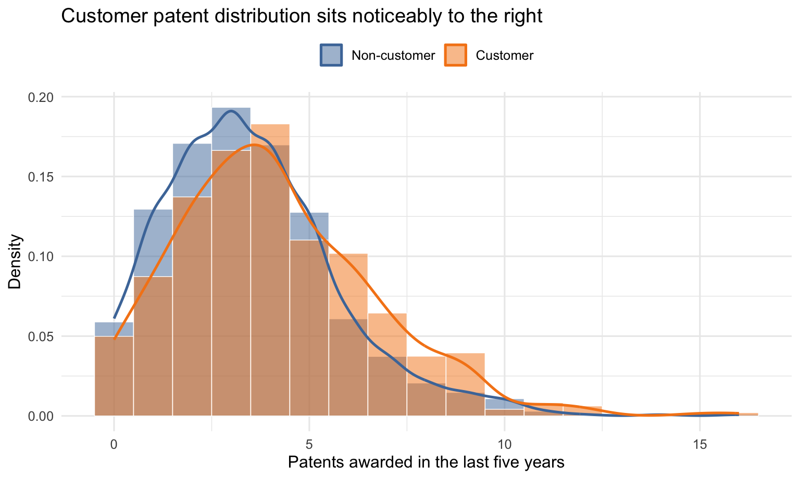
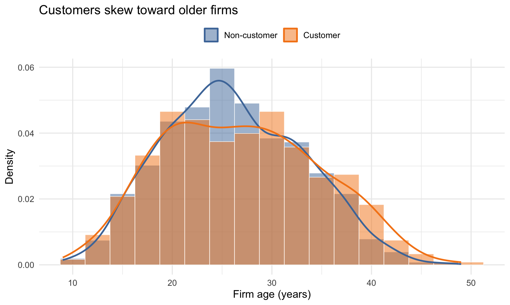
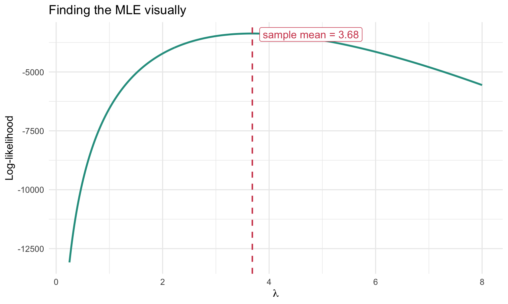
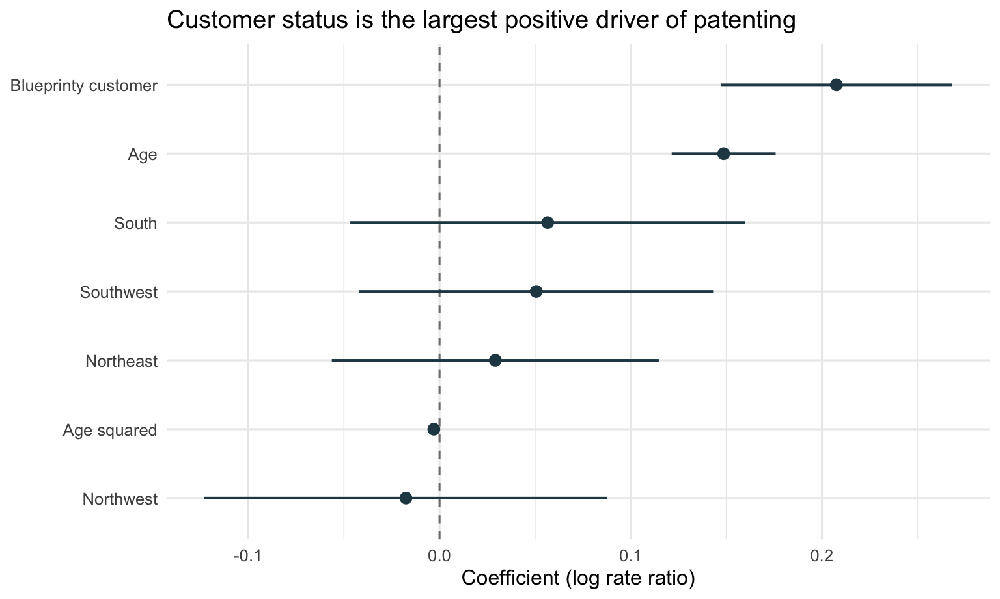
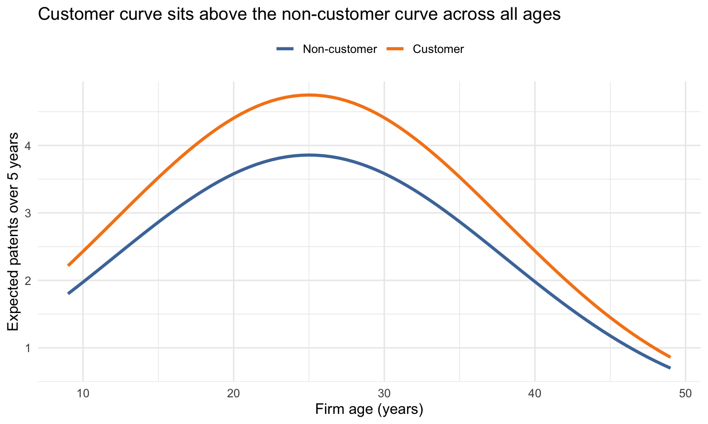
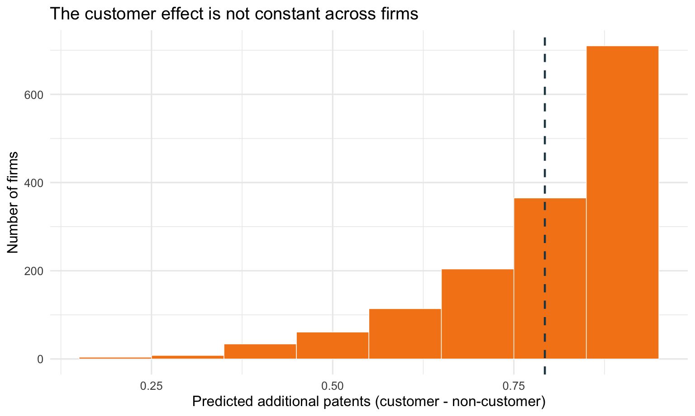

| Table 1: Balance by Customer Status | ||
| Non-customer | Customer | |
|---|---|---|
| Patents | ||
| Number of firms | 1,019 | 481 |
| Mean patents | 3.47 | 4.13 |
| Median patents | 3.00 | 4.00 |
| Age | ||
| Mean age | 26.10 | 26.90 |
| Median age | 25.50 | 26.50 |
| Region share | ||
| Midwest | 18.4% | 7.7% |
| Northeast | 26.8% | 68.2% |
| Northwest | 15.5% | 6.0% |
| South | 15.3% | 7.3% |
| Southwest | 24.0% | 10.8% |
| All values computed across the cross-section of mature engineering firms. | ||
Poisson Regression and Maximum Likelihood Estimation
A Case Study of Blueprinty’s Software and Patent Awards
R
Maximum Likelihood
Poisson Regression
Marketing Analytics
A Blueprinty case study using maximum likelihood estimation, Poisson regression, and counterfactual prediction to estimate expected patent lift.
Introduction
Blueprinty is a small software company that helps engineering firms prepare blueprint materials for patent applications submitted to the United States Patent and Trademark Office. Its marketing team would like to make a persuasive claim: firms that use Blueprinty’s software are more successful at getting patents approved.
The cleanest way to test that claim would be to observe the same firms before and after they adopted Blueprinty’s software. If we knew each firm’s patent success before adoption and after adoption, we could study within-firm changes more directly. That ideal data set is not available here. Instead, Blueprinty has collected a cross-section of 1,500 mature engineering firms, recording each firm’s number of patents awarded over the last five years, its region, its age since incorporation, and whether it uses Blueprinty’s software.
That makes the question interesting but also delicate. Blueprinty’s customers are not selected at random. If customers have more patents than non-customers, the difference might reflect the software, but it might also reflect the kinds of firms that choose to become customers. Older firms, firms in patent-heavy regions, or firms with stronger existing innovation pipelines may be both more likely to buy Blueprinty and more likely to win patents. The analysis below starts with raw comparisons, then uses Poisson regression to compare firms while holding age and region fixed.
TipKey takeaway
After adjusting for firm age and region, Blueprinty customers are expected to win about 0.79 more patents per firm over five years – a 23.1% lift relative to otherwise similar non-customers. The evidence is consistent with Blueprinty’s marketing claim, but the design is observational and cannot fully rule out unobserved confounders.
The rest of this post walks through the data, derives the Poisson likelihood from scratch, fits the model two ways (hand-coded MLE and glm()), and translates the customer coefficient into expected additional patents.
Exploring the Data
Before fitting any model, it helps to see whether customers and non-customers look similar on the dimensions we observe. The table below summarizes the three observable axes – patent counts, firm age, and region – by customer status.
The balance table shows why the raw customer/non-customer comparison needs care. Customers have more patents on average, but they are also older on average. They are also disproportionately concentrated in the Northeast, which could matter if patenting opportunities or industry composition vary by region. Therefore, the raw patent gap could partly reflect age or region rather than Blueprinty’s software itself, motivating the regression below.
The patent-count distributions confirm the headline: customers’ density mass is shifted to the right.

The age distributions show the second confound: customers skew older.

These observed imbalances are exactly what the Poisson regression below adjusts for.
A Simple Poisson Model via Maximum Likelihood
The number of patents awarded to a firm is a non-negative integer count, so a Normal model is a poor fit. The Poisson distribution is the natural starting point. The derivation below shows that, in the simplest one-parameter case, the MLE has a clean closed form: \(\hat{\lambda}_{MLE} = \bar{Y}\). Readers who want to skip the algebra can jump straight to the plot.
NoteDerivation: log-likelihood and analytic MLE
Start with the simplest version: every firm is assumed to have the same patent rate, \(\lambda\). For one observation,
\[ f(Y_i|\lambda) = \frac{e^{-\lambda}\lambda^{Y_i}}{Y_i!}. \]
Assuming the \(n\) observations are independent and identically distributed, the joint likelihood is the product of the individual probabilities:
\[ L(\lambda|Y_1,\ldots,Y_n) = \prod_{i=1}^{n} \frac{e^{-\lambda}\lambda^{Y_i}}{Y_i!}. \]
This can be rearranged as
\[ L(\lambda|Y) = e^{-n\lambda}\lambda^{\sum_{i=1}^{n}Y_i} \times \prod_{i=1}^{n}\frac{1}{Y_i!}. \]
Taking logs turns products into sums and gives the log-likelihood:
\[ \ell(\lambda) = \sum_{i=1}^{n}\left[-\lambda + Y_i\log(\lambda) - \log(Y_i!)\right] = -n\lambda + \log(\lambda)\sum_{i=1}^{n}Y_i - \sum_{i=1}^{n}\log(Y_i!). \]
The analytic result comes from differentiating the log-likelihood:
\[ \frac{\partial \ell}{\partial \lambda} = -n + \frac{1}{\lambda}\sum_{i=1}^{n}Y_i. \]
Set the derivative equal to zero:
\[ 0 = -n + \frac{1}{\lambda}\sum_{i=1}^{n}Y_i. \]
Solving for \(\lambda\) gives
\[ \hat{\lambda}_{MLE} = \frac{1}{n}\sum_{i=1}^{n}Y_i = \bar{Y}. \]
That result is intuitive because the mean of a Poisson distribution is \(\lambda\).
The following function implements that log-likelihood directly. The use of lgamma(Y + 1) is a numerically stable way to compute \(\log(Y!)\).
Code
poisson_loglikelihood <- function(lambda, Y) {
if (lambda <= 0) {
return(-Inf)
}
sum(-lambda + Y * log(lambda) - lgamma(Y + 1))
}
The maximum likelihood estimate is the value of \(\lambda\) where the curve reaches its highest point. Visually, that peak occurs almost exactly at the sample mean of patent counts.
I maximize this log-likelihood numerically with optim(method = 'Brent') and recover the same value as the sample mean.
The numerical maximization and the sample mean coincide because the first-order condition for the simple Poisson likelihood has a closed-form solution. In this sample, the estimated common patent rate is approximately 3.68 patents per firm over five years.
Poisson Regression
The simple model is useful for understanding MLE, but it assumes every firm has the same expected patent count. That is too restrictive for this business question. Firms differ by age, region, and customer status, so the model should allow the expected count to vary across firms:
\[ Y_i \sim \text{Poisson}(\lambda_i), \qquad \lambda_i = \exp(X_i'\beta). \]
The exponential link is important. The linear index \(X_i'\beta\) can be any real number, but \(\lambda_i\) must be positive. Exponentiating the index maps it onto the positive real line and makes the model multiplicative in expected patent counts.
Code
poisson_regression_loglikelihood <- function(beta, Y, X) {
eta <- as.vector(X %*% beta)
lambda <- exp(eta)
sum(-lambda + Y * eta - lgamma(Y + 1))
}The covariate matrix includes an intercept, age, age squared, region indicators, and the customer indicator. The omitted region is Midwest, so all region coefficients compare firms to otherwise similar Midwestern firms. Age squared is included because patenting may increase as firms mature but at a decreasing rate; one region must be omitted to avoid perfect collinearity between the intercept and a complete set of region indicators.
I maximize this log-likelihood with optim(method = 'BFGS', hessian = TRUE), then convert the negative inverse Hessian into standard errors.
I verified the hand-coded MLE matches glm() (max coefficient difference < 1e-3) and report the glm() results below.
| Poisson Regression Results | ||||
| Term | Coefficient | SE | Rate ratio | 95% CI |
|---|---|---|---|---|
| Intercept | −0.509 | 0.183 | — | [-0.868, -0.150] |
| Age | 0.149 | 0.014 | 1.160 | [0.121, 0.176] |
| Age squared | −0.003 | 0.000 | 0.997 | [-0.003, -0.002] |
| Northeast | 0.029 | 0.044 | 1.030 | [-0.056, 0.115] |
| Northwest | −0.018 | 0.054 | 0.983 | [-0.123, 0.088] |
| South | 0.057 | 0.053 | 1.058 | [-0.047, 0.160] |
| Southwest | 0.051 | 0.047 | 1.052 | [-0.042, 0.143] |
| Blueprinty customer | 0.208 | 0.031 | 1.231 | [0.147, 0.268] |
Hand-coded MLE coefficients match glm() to within 1e-3 in this sample; standard errors agree to within a comparable tolerance. We report the glm() estimates here. |
||||

The customer coefficient is the central estimate for the marketing question. Because this is a log-link model, the coefficient is interpreted multiplicatively after exponentiation. The estimated customer coefficient is 0.208 with a standard error of 0.031, so holding age and region fixed, Blueprinty customers have a higher expected patent count than comparable non-customers. The age coefficient is positive while the age-squared coefficient is negative, which implies a concave age profile: expected patenting rises with firm age at first, then the increase slows and eventually bends downward. The region coefficients compare each region with the Midwest baseline and capture systematic regional differences in expected patent counts.
A standard diagnostic for Poisson regression is to check whether the variance is close to the mean. The Pearson dispersion statistic for this model is 1.39. A value meaningfully greater than 1 would indicate overdispersion, in which case a Quasi-Poisson or Negative Binomial model would produce wider standard errors while leaving the point estimates similar. The qualitative conclusion about the customer coefficient would not change.
The Effect of Blueprinty’s Software
Before quantifying the customer effect in patent units, it helps to see the fitted age profile that the model implies for an otherwise typical firm. The figure below holds region fixed at the Midwest baseline and traces the expected five-year patent count across the observed age range, separately for customers and non-customers.

The fitted age pattern is concave: expected patenting rises as firms mature, then bends rather than increasing forever. The customer curve sits uniformly above the non-customer curve because the estimated customer coefficient raises the expected Poisson rate multiplicatively.
To then translate the model into a concrete business quantity, I use counterfactual prediction. I keep every firm’s observed age and region fixed and predict what the model expects if every firm were a non-customer, and again if every firm were a customer. The average of the resulting per-firm differences is the model’s estimate of the customer effect.
| Counterfactual Average Predictions | |
| Scenario | Expected patents per firm |
|---|---|
| All firms treated as non-customers | 3.436 |
| All firms treated as customers | 4.229 |
TipEstimated customer effect
- Average additional patents per firm: 0.79
- Percent lift in expected patents: 23.1%
Held constant: each firm’s observed age and region. Differences across firms are averaged.

Because \(\lambda = \exp(X\beta)\), the additive effect of iscustomer is larger for firms with higher baseline \(\lambda\), so older or favorably located firms benefit more in absolute patent counts.
The model estimates that becoming a Blueprinty customer is associated with an average increase of about 0.79 patents per firm over five years, holding the firm’s age and region fixed at their observed values. In percentage terms, the predicted patent count for customers is about 23.1% higher than it would be if the same firms were treated as non-customers.
This is evidence consistent with Blueprinty’s marketing claim, but it should not be read as definitive causal proof. The data are observational rather than randomized. The model adjusts for observed differences in age and region, but firms may still differ on unobserved dimensions such as R&D intensity, patent strategy, legal resources, management quality, or product-market focus. Those unobserved factors could also affect patent counts. A careful conclusion is therefore that Blueprinty customers have higher expected patent counts after controlling for age and region, but the design cannot fully rule out remaining confounding.
What I’d Do With More Data
With panel or longitudinal data, the next step would be to follow the same firms over time and observe when they adopted Blueprinty’s software. That structure would make it possible to use firm fixed effects or a difference-in-differences design around the adoption date, shifting the analysis from cross-sectional differences between firms toward within-firm changes after adoption.
Richer covariates would also help. Measures such as R&D spending, headcount, industry sub-sector, patent attorney resources, or prior innovation intensity would make the comparison between customers and non-customers more credible. Propensity-score weighting or matching on observed characteristics could further narrow the gap between observational evidence and a causal estimate, although only a randomized rollout would fully establish causality.
ImportantBottom line
Under the Poisson model with age and region controls, being a Blueprinty customer is associated with about 0.79 additional patents per firm over five years (23.1% lift). This is a useful directional signal for Blueprinty’s marketing claim, but should be read as a controlled correlation, not a causal effect.